Liquid Equation of State#
We use the DFT-LDA liquid silica model from Karki et al. [2007]. This dataset covers the pressure-volume-temperature range of interest for the melt curve and shock and release experiments: 2.2 to 5.4 g/cm\(^3\) and 3000 to 6000 K.
Karki presents a fit to the 3000 K isotherm and a function for the thermal pressure term fitted to the dataset. Here, we add a bound for 0 pressure at 1 g/cm\(^3\) and fit a fifth order polynomial to the 3000 K isotherm and use the Karki thermal pressure model.
The implementation for the PVT EOS model is shown in load_liquid_model.py.
---------------------------------------------------------------------------
FileNotFoundError Traceback (most recent call last)
File ~/work/silica-supplement/silica-supplement/silica-book/scripts/define_eos.py:265
263 fs_fitTus_stv0.outputfitpath = modelfitpath # in load_paths.py
264 fs_fitTus_stv0.filename = 'fs_fitTus_stv_quadratic'
--> 265 fs_fitTus_stv0.loadjson()
266 fs_hug_stv.T = fs_fitTus_stv0.calcf(fs_hug_stv.us) # calculate temperatures on the solid branch Hugoniot
268 # ------- Fused Silica Transitions -----------
269 #
270 # FS Pressure bounds on the Omega data wiggles
File ~/work/silica-supplement/silica-supplement/silica-book/scripts/hpeos_module.py:351, in HPeos_Fit.loadjson(self)
348 def loadjson(self):
349 # read in json formatted fit record file and then reconstruct a dictionary
350 # need to add a function to load the readable version
--> 351 with open(self.outputfitpath+self.filename+'.txt', 'r') as f:
352 filetext = f.readlines()[0] # read in whole file into text
353 datadict = json.loads(filetext) # convert long string into dictionary
FileNotFoundError: [Errno 2] No such file or directory: './model-fits/fs_fitTus_stv_quadratic.txt'
---------------------------------------------------------------------------
NameError Traceback (most recent call last)
File ~/work/silica-supplement/silica-supplement/silica-book/scripts/calibrate_decaying_shocks.py:20
15 qtz_hug_KD.rho = 1/((1/qtz_hug_KD.rho_ref)*(1-(qtz_hug_KD.up/qtz_hug_KD.us))) # kg/m3
18 # Calibrate Millot & Davies unpublished decaying shocks in alpha-quartz, z cut
19 # high pressure uses the liquid branch of the new Hugoniot fit
---> 20 shockdat_list[MDqtz70811['id']].P = np.interp(shockdat_list[MDqtz70811['id']].us,qtz_hug_liq.us,qtz_hug_liq.P)
21 shockdat_list[MDqtz70811['id']].rho = np.interp(shockdat_list[MDqtz70811['id']].us,qtz_hug_liq.us,qtz_hug_liq.rho)
22 shockdat_list[MDqtz70811['id']].up = np.interp(shockdat_list[MDqtz70811['id']].us,qtz_hug_liq.us,qtz_hug_liq.up)
NameError: name 'qtz_hug_liq' is not defined
---------------------------------------------------------------------------
FileNotFoundError Traceback (most recent call last)
File ~/work/silica-supplement/silica-supplement/silica-book/scripts/load_vapor_domes.py:34
32 C16lows = np.loadtxt(silicadatadir+'Connolly-low-cp.csv',delimiter=',',usecols=[0])
33 C16lowt = np.loadtxt(silicadatadir+'Connolly-low-cp.csv',delimiter=',',usecols=[1])
---> 34 C16bdrho = np.loadtxt(silicadatadir+'Connolly-Fig4b-black-dashed-T-rho.csv',delimiter=',',usecols=[0])/1.e3
35 C16bdtemp = np.loadtxt(silicadatadir+'Connolly-Fig4b-black-dashed-T-rho.csv',delimiter=',',usecols=[1])
37 C16sils = np.loadtxt(silicadatadir+'Connolly-SiL-VWRK.csv',delimiter=',',usecols=[0])
File /opt/hostedtoolcache/Python/3.13.16/x64/lib/python3.13/site-packages/numpy/lib/_npyio_impl.py:1395, in loadtxt(fname, dtype, comments, delimiter, converters, skiprows, usecols, unpack, ndmin, encoding, max_rows, quotechar, like)
1392 if isinstance(delimiter, bytes):
1393 delimiter = delimiter.decode('latin1')
-> 1395 arr = _read(fname, dtype=dtype, comment=comment, delimiter=delimiter,
1396 converters=converters, skiplines=skiprows, usecols=usecols,
1397 unpack=unpack, ndmin=ndmin, encoding=encoding,
1398 max_rows=max_rows, quote=quotechar)
1400 return arr
File /opt/hostedtoolcache/Python/3.13.16/x64/lib/python3.13/site-packages/numpy/lib/_npyio_impl.py:1022, in _read(fname, delimiter, comment, quote, imaginary_unit, usecols, skiplines, max_rows, converters, ndmin, unpack, dtype, encoding)
1020 fname = os.fspath(fname)
1021 if isinstance(fname, str):
-> 1022 fh = np.lib._datasource.open(fname, 'rt', encoding=encoding)
1023 if encoding is None:
1024 encoding = getattr(fh, 'encoding', 'latin1')
File /opt/hostedtoolcache/Python/3.13.16/x64/lib/python3.13/site-packages/numpy/lib/_datasource.py:192, in open(path, mode, destpath, encoding, newline)
155 """
156 Open `path` with `mode` and return the file object.
157
(...) 188
189 """
191 ds = DataSource(destpath)
--> 192 return ds.open(path, mode, encoding=encoding, newline=newline)
File /opt/hostedtoolcache/Python/3.13.16/x64/lib/python3.13/site-packages/numpy/lib/_datasource.py:529, in DataSource.open(self, path, mode, encoding, newline)
526 return _file_openers[ext](found, mode=mode,
527 encoding=encoding, newline=newline)
528 else:
--> 529 raise FileNotFoundError(f"{path} not found.")
FileNotFoundError: ../data_silica_db/Connolly-Fig4b-black-dashed-T-rho.csv not found.
---------------------------------------------------------------------------
NameError Traceback (most recent call last)
File ~/work/silica-supplement/silica-supplement/silica-book/scripts/hugoniot-entropy.py:17
13 print(P_start,S_start,rho_start)
14 if 1:
15 # calculate the starting point relative to the karkipvt.refpt
16 #P_start = fs_wiggle_P2#fs_p_startliq # GPa based on wiggle
---> 17 P_start = fs_wiggle_P2#fs_p_startliq # GPa based on wiggle
18 rho_start = np.interp(P_start,fs_hug_liq.P,fs_hug_liq.rho)
19 t_start = np.interp(P_start,fs_hug_liq.P,fs_hug_liq.T)
NameError: name 'fs_wiggle_P2' is not defined
#%run -i scripts/hugoniot-calcs.py # includes entropies
print(fs_hug_liq.S)
[]
---------------------------------------------------------------------------
FileNotFoundError Traceback (most recent call last)
Cell In[3], line 18
14 plt.xlabel(r'Density (g/cm$^3$)')
15 plt.ylabel('Pressure (GPa)')
16 plt.title('Karki et al. 2007 Isotherms (original)')
17 plt.tight_layout()
---> 18 plt.savefig(outputfigpath+'K1-karki-dft-and-fits.pdf')
19 plt.show()
File /opt/hostedtoolcache/Python/3.13.16/x64/lib/python3.13/site-packages/matplotlib/pyplot.py:1251, in savefig(*args, **kwargs)
1248 fig = gcf()
1249 # savefig default implementation has no return, so mypy is unhappy
1250 # presumably this is here because subclasses can return?
-> 1251 res = fig.savefig(*args, **kwargs) # type: ignore[func-returns-value]
1252 fig.canvas.draw_idle() # Need this if 'transparent=True', to reset colors.
1253 return res
File /opt/hostedtoolcache/Python/3.13.16/x64/lib/python3.13/site-packages/matplotlib/figure.py:3490, in Figure.savefig(self, fname, transparent, **kwargs)
3488 for ax in self.axes:
3489 _recursively_make_axes_transparent(stack, ax)
-> 3490 self.canvas.print_figure(fname, **kwargs)
File /opt/hostedtoolcache/Python/3.13.16/x64/lib/python3.13/site-packages/matplotlib/backend_bases.py:2184, in FigureCanvasBase.print_figure(self, filename, dpi, facecolor, edgecolor, orientation, format, bbox_inches, pad_inches, bbox_extra_artists, backend, **kwargs)
2180 try:
2181 # _get_renderer may change the figure dpi (as vector formats
2182 # force the figure dpi to 72), so we need to set it again here.
2183 with cbook._setattr_cm(self.figure, dpi=dpi):
-> 2184 result = print_method(
2185 filename,
2186 facecolor=facecolor,
2187 edgecolor=edgecolor,
2188 orientation=orientation,
2189 bbox_inches_restore=_bbox_inches_restore,
2190 **kwargs)
2191 finally:
2192 if bbox_inches and restore_bbox:
File /opt/hostedtoolcache/Python/3.13.16/x64/lib/python3.13/site-packages/matplotlib/backend_bases.py:2040, in FigureCanvasBase._switch_canvas_and_return_print_method.<locals>.<lambda>(*args, **kwargs)
2036 optional_kws = { # Passed by print_figure for other renderers.
2037 "dpi", "facecolor", "edgecolor", "orientation",
2038 "bbox_inches_restore"}
2039 skip = optional_kws - {*inspect.signature(meth).parameters}
-> 2040 print_method = functools.wraps(meth)(lambda *args, **kwargs: meth(
2041 *args, **{k: v for k, v in kwargs.items() if k not in skip}))
2042 else: # Let third-parties do as they see fit.
2043 print_method = meth
File /opt/hostedtoolcache/Python/3.13.16/x64/lib/python3.13/site-packages/matplotlib/backends/backend_pdf.py:2779, in FigureCanvasPdf.print_pdf(self, filename, bbox_inches_restore, metadata)
2777 file = filename._ensure_file()
2778 else:
-> 2779 file = PdfFile(filename, metadata=metadata)
2780 try:
2781 file.newPage(width, height)
File /opt/hostedtoolcache/Python/3.13.16/x64/lib/python3.13/site-packages/matplotlib/backends/backend_pdf.py:687, in PdfFile.__init__(self, filename, metadata)
685 self.original_file_like = None
686 self.tell_base = 0
--> 687 fh, opened = cbook.to_filehandle(filename, "wb", return_opened=True)
688 if not opened:
689 try:
File /opt/hostedtoolcache/Python/3.13.16/x64/lib/python3.13/site-packages/matplotlib/cbook.py:546, in to_filehandle(fname, flag, return_opened, encoding)
544 fh = bz2.BZ2File(fname, flag)
545 else:
--> 546 fh = open(fname, flag, encoding=encoding)
547 opened = True
548 elif hasattr(fname, 'seek'):
FileNotFoundError: [Errno 2] No such file or directory: 'output-figs/K1-karki-dft-and-fits.pdf'
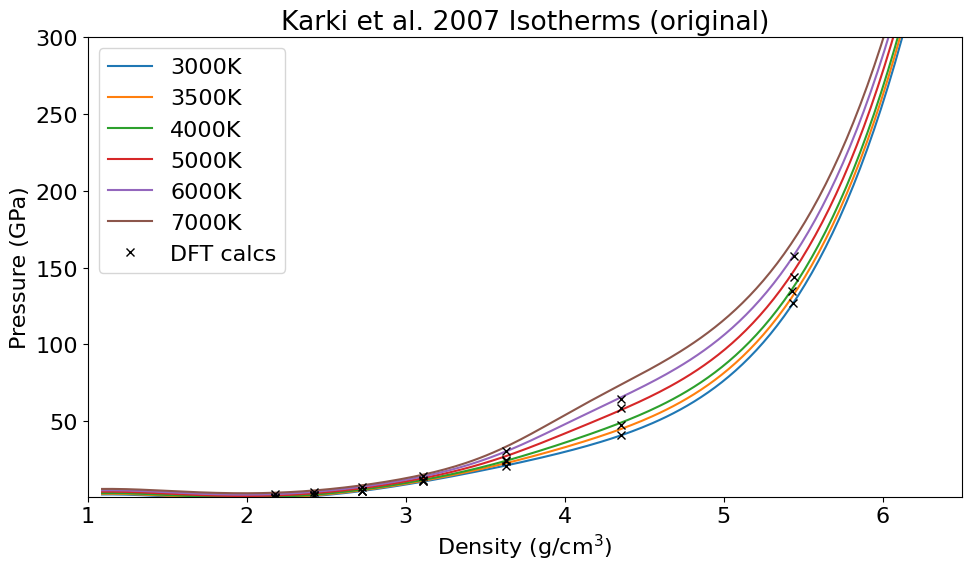

Fig. 1 Isotherms in silica liquid from PVT model from [Karki et al., 2007]. Black \(\times\) are calculated DFT points using LDA.#
<matplotlib.legend.Legend at 0x33593ee90>
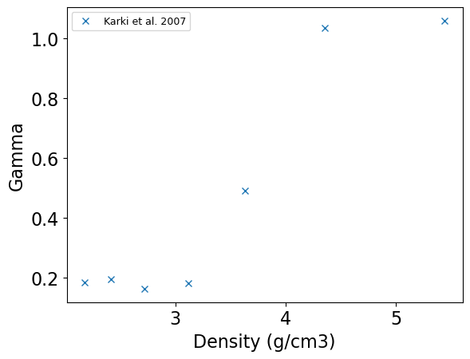
Fig. 2 Grüneisen parameter in silica liquid from Karki et al. [2007], where each point is the average from 3000-6000 K data. Note that the high-density limit approaches 2/3 [Li et al., 2018, McCoy et al., 2016]. The peak in \(\gamma\) corresponds to increasing the coordination number of Si-O in the fluid, and a similar feature is seen in forsterite (Mg\(_2\)SiO\(_4\) in Davies et al. [2020]). At low densities, the plateau near 0.2 is also observed in other ab initio studies [de Koker and Stixrude, 2009]. We use the Grüneisen parameter to link isentropes from the Hugoniot to the vapor curve (see Fig. 4).#
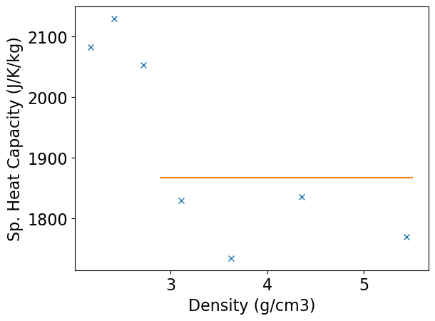
Fig. 3 Specific heat capacity in silica liquid from [Karki et al., 2007]. We use a constant heat capacity to calculate the entropy difference between isotherms at the reference density.#
Compare Karki et al. 2007 liquid model to shock Hugoniots#
The Karki et al. liquid model is offset from the shock Hugoniot data. We derived a constant shift in density between DFT and the shock Hugoniots for fused silica, quartz, and coesite in DFT with LDA. That constant shift in density is applied to the Karki model to define a liquidus curve density.
The DFT liquid model is shifted by -0.1460732034660399 g/cm3.
print(karkipvt.cv)
1868.065842251552
Gamma model#
The Grueneisen parameter in the liquid EOS model uses the fits provided by Ocampo et al. [2025].
plt.plot(karkigcvorig.rho+lda_liquid_density_shift,karkigcvorig.gamma,'x',label='K07 calcs shifted')
#plt.plot(sftpvt.rhoarr,sftpvt.garr,'--',label='Sft EOS model')
plt.plot(shockdat[iO25fs.i].rho,shockdat[iO25fs.i].gamma,'d',label='O25')
v00=0.4627
vvv = (1/v00)/karkipvt.rhoarr
gammaO25low = 0.14*np.pow(vvv,-2.39)
#plt.plot(karkipvt.rhoarr,gammaO25low)
# OCampo et al. 2025
A00=0.381
B00=5.033
C00=0.1056
gammaO25 = 2/3 + A00*np.exp(-np.pow(np.log(karkipvt.rhoarr/B00)/C00,2))
ind = np.where(karkipvt.rhoarr>B00)[0]
#plt.plot(karkipvt.rhoarr[ind],gammaO25[ind])
plt.plot(karkipvt.rhoarr,karkipvt.garr,'k-',label='Liquid EOS model (O25)')
#plt.plot([3.7,4.62,4.87,5.0],[.5,.83,.95,1.03],'bd')
plt.xlabel('Density (g/cm3)')
plt.ylabel('Gamma')
plt.xlim(1,6.5)
plt.ylim(0,1.5)
plt.legend(fontsize=lfss)
plt.show()
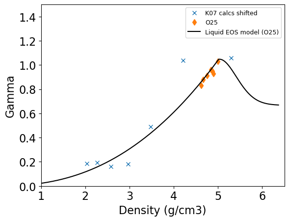
Fig. 4 Grüneisen parameter model used for silica liquid are fits from Ocampo et al. [2025]. Calculated DFT points from Karki et al. [2007] are shifted in density.#
Calculated isentropes#
At the liquid reference point density (4.645 g/cm3), we calculate the specific entropy at different temperatures using a constant specific heat capacity (Fig. 3) from our reference tie point. The Grüneisen parameter is used to calculate the temperature-density isentropes originating from the reference density.
To calculate the entropy at the reference density:
\(S(T) = [ln(T)-ln(T_{\rm ref})]*c_v + S_{\rm ref}\)
To calculate the temperature along an isentrope:
\(ln(T_{i}) = \gamma(\rho_i)*[ln(\rho_{i})-ln(\rho_{i-1})] + ln(T_{i-1})\)
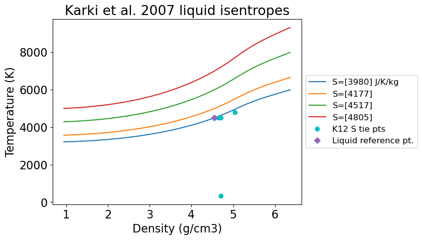
Fig. 5 Isentropes in silica liquid using the reference point, constant specific heat capacity, and model Grüneisen parameter.#
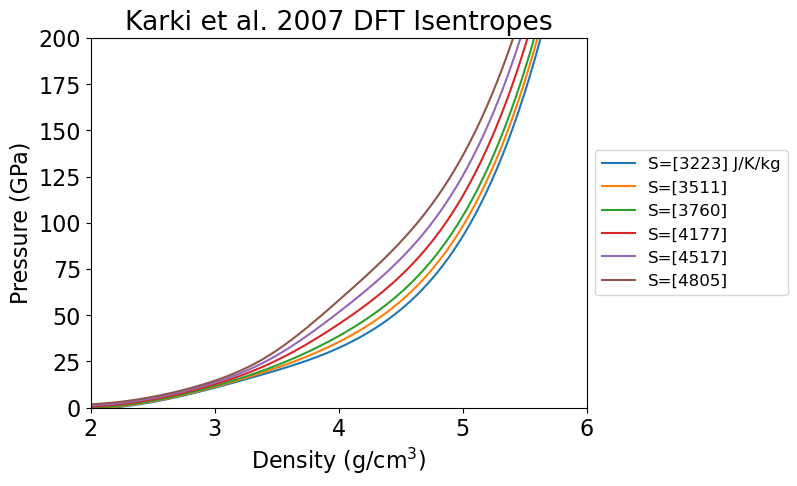
Fig. 6 Isentropes in silica liquid in pressure-density space.#
Absolute entropy tie point#
The reference point entropy is chosen so that the model intersects the 1-bar boiling point on the silica vapor curve.
From Connolly [2016], the 1-bar boiling point for liquid SiO\(_2\) is about T=3130\(\pm\)30 K and S=3560\(\pm\)100 J/K/kg.
The tie point is defined in the define_eos.py file.
Liquid reference point:
Density (g/cm3): 4.550678911282411
Pressure (GPa): 70
Temperature (K): 4500
Specific Entropy (J/K/kg): 3980
1-bar boiling isentrope (J/K/kg): 3980
plt.figure(figsize=(8, 6))
plt.rcParams.update({'font.size': 14})
# plot Karki DFT Isentropes
ind = np.where(karkipvt.rhoarr < 6)[0]
iii = np.where(karkipvt.stempsarr == 3500)[0]
plt.plot(karkipvt.rhoarr[ind],karkipvt.st3500[ind],':',label='Liquid S='+str(np.int_(np.round(karkipvt.svalsarr[iii])))+' J/K/kg')
x,y=intersection(karkipvt.rhoarr[ind],karkipvt.st3500[ind],kdome.rho_l,kdome.T)
print(x,y)
plt.plot(x,y,'ko')
K12sint = np.interp(y[0],np.flip(kdome.T),np.flip(kdome.ent_l))
print(K12sint,karkipvt.svalsarr[iii],K12sint-karkipvt.svalsarr[iii][0])
iii = np.where(karkipvt.stempsarr == 4500)[0]
plt.plot(karkipvt.rhoarr[ind],karkipvt.st4500[ind],':',label='S='+str(np.int_(np.round(karkipvt.svalsarr[iii]))))
x,y=intersection(karkipvt.rhoarr[ind],karkipvt.st4500[ind],C16bsrho,C16bstemp)
print(x,y)
plt.plot(x,y,'co')
C16sint = np.interp(y[0],C16hight,C16highs)
print('C16 cyan',C16sint,karkipvt.svalsarr[iii],C16sint-karkipvt.svalsarr[iii][0])
x,y=intersection(karkipvt.rhoarr[ind],karkipvt.st4500[ind],kdome.rho_l,kdome.T)
print(x,y)
plt.plot(x,y,'ko')
K12sint = np.interp(y[0],np.flip(kdome.T),np.flip(kdome.ent_l))
print(K12sint,karkipvt.svalsarr[iii],K12sint-karkipvt.svalsarr[iii][0])
iii = np.where(karkipvt.stempsarr == 5000)[0]
plt.plot(karkipvt.rhoarr[ind],karkipvt.st5000[ind],':',label='S='+str(np.int_(np.round(karkipvt.svalsarr[iii]))))
iii = np.where(karkipvt.stempsarr == 5500)[0]
plt.plot(karkipvt.rhoarr[ind],karkipvt.st5500[ind],':',label='S='+str(np.int_(np.round(karkipvt.svalsarr[iii]))))
iii = np.where(karkipvt.stempsarr == 6000)[0]
plt.plot(karkipvt.rhoarr[ind],karkipvt.st6000[ind],':',label='S='+str(np.int_(np.round(karkipvt.svalsarr[iii]))))
x,y=intersection(karkipvt.rhoarr[ind],karkipvt.st6000[ind],C16bsrho,C16bstemp)
print(x,y)
plt.plot(x,y,'co')
C16sint = np.interp(y[0],C16hight,C16highs)
print('C16 cyan',C16sint,karkipvt.svalsarr[iii],C16sint-karkipvt.svalsarr[iii][0])
x,y=intersection(karkipvt.rhoarr[ind],karkipvt.st6000[ind],kdome.rho_l,kdome.T)
print(x,y)
plt.plot(x,y,'ko')
K12sint = np.interp(y[0],np.flip(kdome.T),np.flip(kdome.ent_l))
print(K12sint,karkipvt.svalsarr[iii],K12sint-karkipvt.svalsarr[iii][0])
iii = np.where(karkipvt.stempsarr == 7000)[0]
plt.plot(karkipvt.rhoarr[ind],karkipvt.st7000[ind],':',label='S='+str(np.int_(np.round(karkipvt.svalsarr[iii]))))
x,y=intersection(karkipvt.rhoarr[ind],karkipvt.st7000[ind],C16bsrho,C16bstemp)
#print(x,y)
C16sint = np.interp(y[0],C16hight,C16highs)
#print(C16sint,karkipvt.svalsarr[iii])
iii = np.where(karkipvt.stempsarr == 8000)[0]
plt.plot(karkipvt.rhoarr[ind],karkipvt.st8000[ind],':',label='S='+str(np.int_(np.round(karkipvt.svalsarr[iii]))))
x,y=intersection(karkipvt.rhoarr[ind],karkipvt.st8000[ind],C16bsrho,C16bstemp)
#print(x,y)
C16sint = np.interp(y[0],C16hight,C16highs)
#print(C16sint,karkipvt.svalsarr[iii])
# new reference point
plt.plot(karkipvt.refpt[0],karkipvt.refpt[2],'D',label='Liquid reference pt.')
# PLOT TIE ISENTROPE
sval=3560
karkipvt.isenval_liquid(sval)
plt.plot(karkipvt.rhoarr,karkipvt.isenval_t,'k-',label='S=3560 TIE')
plt.plot(C16bsrho,C16bstemp,'k-',label='C16 HSC-vWRK')
plt.plot(C16bdrho,C16bdtemp,'k--',label='C16 HSC-CSRK')
plt.plot(C16rsrho,C16rstemp,'r-',label='C16 SiO(l)-vWRK')
plt.plot(kdome.rho_l,kdome.T,'-',color='grey',label='K12 MANEOS vapor curve')
plt.plot(kdome.rho_v,kdome.T,'-',color='grey')
# critical points
plt.plot(1.036,6074,'ko')
plt.plot(.555,5548,'ko')
plt.plot(.782,5675,'ro')
# check the function
#karkipvt.isenval_liquid(3560)
#plt.plot(karkipvt.rhoarr,karkipvt.isenval_t,'--')
#karkipvt.isenval_liquid(4352)
#plt.plot(karkipvt.rhoarr,karkipvt.isenval_t,'--')
plt.xlabel(r'Density (g/cm$^3$)')
plt.ylabel('Temperature (K)')
plt.title('Silica liquid entropy tie point')
plt.legend(loc='center left', bbox_to_anchor=(1, 0.5), fontsize=10)
plt.show()
[2.1245689] [2618.10367482]
3257.5949476539645 [3510.52810086] -252.9331532094966
[2.05428127] [3351.71595978]
C16 cyan 3658.3418012770985 [3980.] -321.6581987229015
[1.89724896] [3322.14581629]
3620.072908144253 [3980.] -359.9270918557472
[1.86667777] [4422.39929466]
C16 cyan 4020.5732242501676 [4517.40905298] -496.835828725139
[1.43627116] [4339.54807135]
4162.124323523275 [4517.40905298] -355.28472945203157
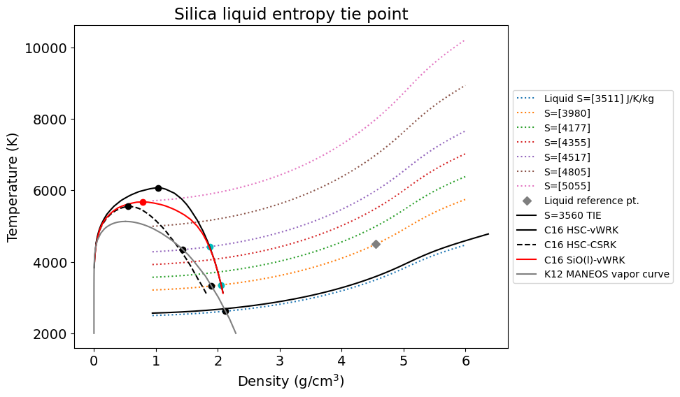
Fig. 7 The absolute entropy in the liquid model is tied to the boiling point at 1 bar and quartz Hugoniot liquidus crossing. Example vapor curves from Connolly [2016] and calculated isentropes using the model from Karki et al. [2007]. The critical points from C16 have S_cp=5322-5404 J/K/kg. This model using a constant heat capacity has slightly larger entropy at the critical points.#
plt.plot(stsmcsmooth.S_l,stsmcsmooth.P,'m-',label='liquidus')
plt.plot(stsmcsmooth.S_s,stsmcsmooth.P,'-',color='grey',label='solidus')
plt.plot(np.interp(qtz_liquidus_P,qtz_hug_liq.P,qtz_hug_liq.S),qtz_liquidus_P,'kD',label='Liquidus intercept from PT')
ind = np.where(qtz_hug_liq.P > qtz_wiggle_P2)[0]
plt.plot(qtz_hug_liq.S[ind],qtz_hug_liq.P[ind],'g-',label='qtz Hugoniot liquid')
plt.plot(qtz_hug_liq_K12.S[ind],qtz_hug_liq_K12.P[ind],'g--',label='Kraus-Davies qtz Hugoniot liquid')
ind = np.where(fs_hug_liq.P >fs_wiggle_P2)[0]
plt.plot(fs_hug_liq.S[ind],fs_hug_liq.P[ind],'b-',label='FS Hugoniot')
plt.plot(np.interp(fs_liquidus_P,fs_hug_liq.P,fs_hug_liq.S),fs_liquidus_P,'kD',label='Liquidus intercept from PT')
ind = np.where(fs_hug_stv.P <fs_wiggle_P2)[0]
plt.plot(fs_hug_stv.S[ind],fs_hug_stv.P[ind],'b--',label='FS Hugoniot')
plt.plot(np.interp(fs_solidus_P, fs_hug_stv.P,fs_hug_stv.S ), fs_solidus_P,'kD',mfc='white')
#ind = np.where(fs_hug_liq_karki.P >fs_wiggle_P2)[0]
#plt.plot(fs_hug_liq_karki.S[ind],fs_hug_liq_karki.P[ind],'b:',label='FS Karki')
ind = np.where((fs_hug_liq_K12.P >70) & (fs_hug_liq_K12.P <110))[0]
plt.plot(fs_hug_liq_K12.S[ind],fs_hug_liq_K12.P[ind],'b--',label='K12 Karki')
ind = np.where(qtz_hug_solid.P <qtz_wiggle_P2)[0]
plt.plot(qtz_hug_solid.S[ind],qtz_hug_solid.P[ind],'g--',label='FS Hugoniot')
plt.plot(np.interp(qtz_solidus_P, qtz_hug_solid.P,qtz_hug_solid.S ), qtz_solidus_P,'kD',mfc='white')
plt.plot(stv_reference_point[3],stv_reference_point[1],'bo',label='K12 stv ref pt')
plt.plot(krausrefpt[3],krausrefpt[1],'bo',mfc='white',label='K12 liq ref pt')
plt.plot(liquid_reference_point[3],liquid_reference_point[1],'bd',label='New liq ref pt')
#plt.plot(kdome.ent_l,kdome.P,'-',color='grey',label='K12 MANEOS vapor curve')
#plt.plot(kdome.ent_v,kdome.P,'-',color='grey')
#plt.plot( 5150,5130,'o',color='grey',markersize=5)
#plt.plot(3820,70,'bD')
plt.ylim(0.0,250)
plt.xlim(3000,7000)
plt.xlabel('Sp. Entropy (J/K/kg)')
plt.ylabel('Pressure (GPa)')
plt.legend(fontsize=lfss,loc='lower right')
<matplotlib.legend.Legend at 0x336d996d0>
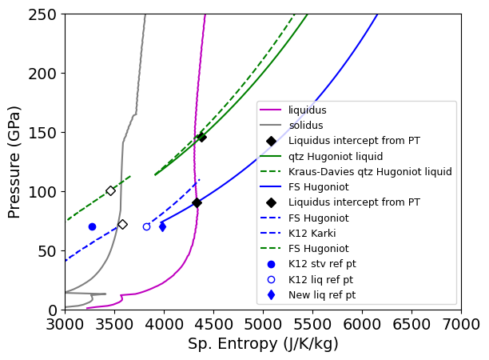
print(-1.414*Rgas/(sio2mol/1000)-229)
-424.6626000699033
Fig. 8 The absolute entropy in the liquid model agrees with quartz Hugoniot liquidus crossing from Kraus-Davies.#
plt.figure(figsize=(10, 6))
plt.rcParams.update({'font.size': 16})
plt.plot(karkipvt.rhoarr,karkipvt.p3000,'-',label='3000K')
#plt.plot(karkipvt.rhoarr,karkipvt.p3500,'-',label='3500K')
plt.plot(karkipvt.rhoarr,karkipvt.p4000,'-',label='4000K')
plt.plot(karkipvt.rhoarr,karkipvt.p4500,'-',label='4500K')
plt.plot(karkipvt.rhoarr,karkipvt.p5000,'-',label='5000K')
plt.plot(karkipvt.rhoarr,karkipvt.p6000,'-',label='6000K')
plt.plot(karkipvt.rhoarr,karkipvt.p7000,'-',label='7000K')
plt.plot(karki.rho+lda_liquid_density_shift,karki.P,'kx',label='DFT calcs shifted')
if 0:
# check the isotherm function works
tval=7000
karkipvt.isotherm_liquid(tval)
plt.plot(karkipvt.rhoarr,karkipvt.isotherm_p,'c:',linewidth=5)
tval=6000
karkipvt.isotherm_liquid(tval)
plt.plot(karkipvt.rhoarr,karkipvt.isotherm_p,'c:',linewidth=5)
plt.plot(karkipvt.refpt[0],karkipvt.refpt[1],'D',label='Tie pt')
print(karkipvt.refpt)
plt.ylim(0,200)
plt.xlim(1,6)
plt.legend()
plt.xlabel(r'Density (g/cm$^3$)')
plt.ylabel('Pressure (GPa)')
plt.title('Karki et al. 2007 Isotherms (shifted)')
plt.tight_layout()
plt.show()
[np.float64(4.550678911282411), 70, 4500, 3980]
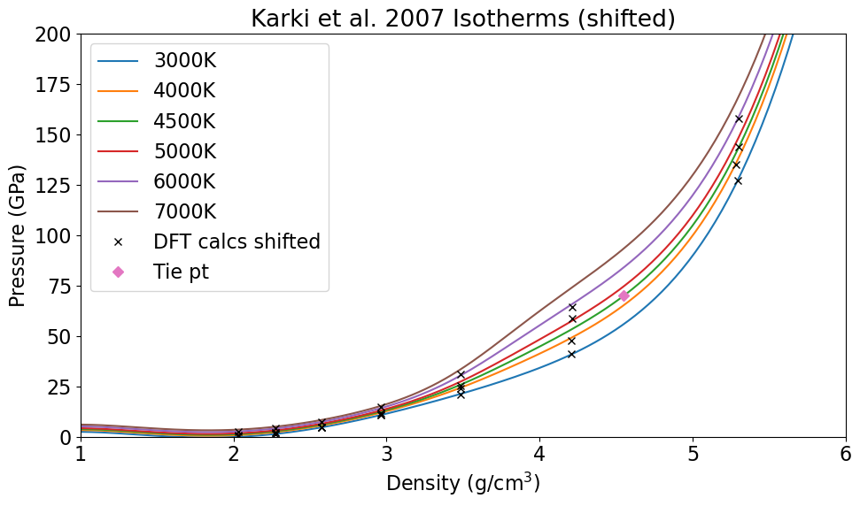
Calculate dU along the isentropes#
karkipvt.isenval_liquid(karkipvt.refpt[3])
#plt.plot(karkipvt.rhoarr,karkipvt.isenval_t,'--')
plt.plot(karkipvt.rhoarr,karkipvt.isenval_u,'--')
karkipvt.isenval_liquid(4352)
#plt.plot(karkipvt.rhoarr,karkipvt.isenval_t,'--')
plt.plot(karkipvt.rhoarr,karkipvt.isenval_u,'--')
plt.plot(karkipvt.refpt[0],0,'kX',label='Liquid tie point')
plt.xlabel('Density (g/cm3)')
plt.ylabel('Relative Sp. Internal Energy (J/kg)')
plt.legend()
plt.show()
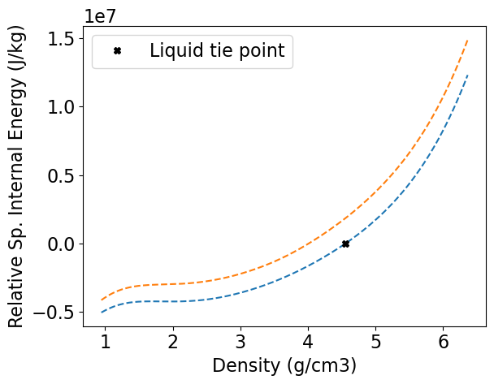
Calculated liquidus#
Using the proposed melt curve, calculate the state variables along the liquidus using the Karki et al. liquid model.
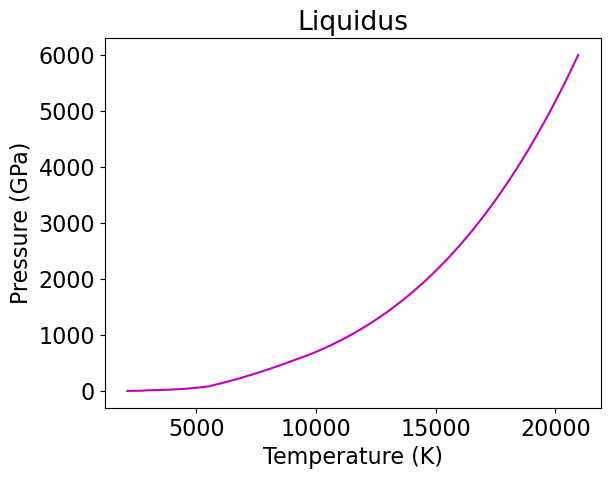
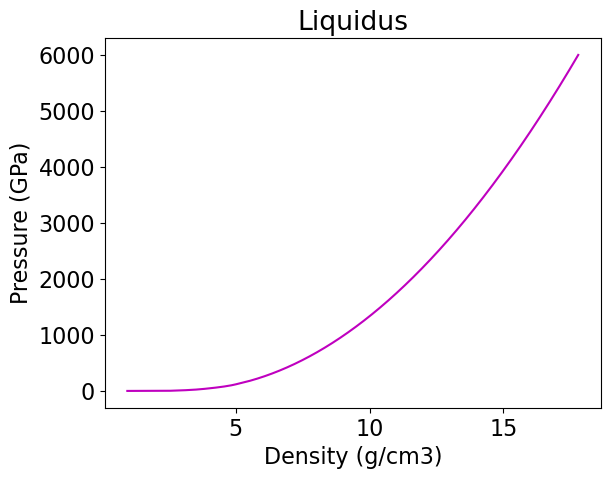
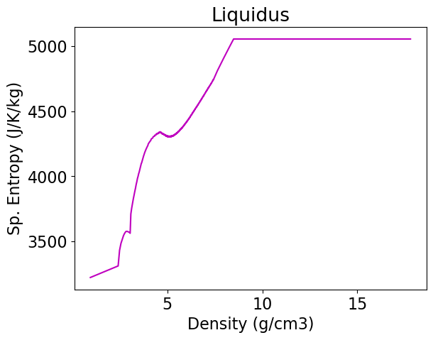
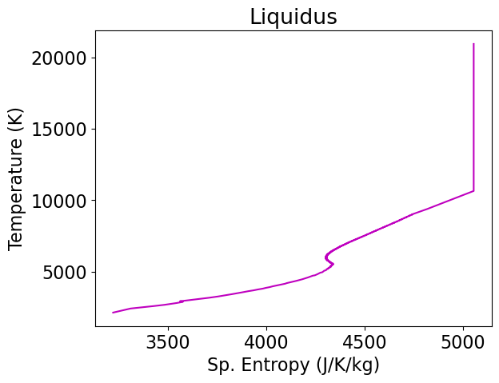
Fig. 9 State variables along the model liquidus from this work.#
Problems with the model#
We need a new liquid EOS model with PVTS that is appropriate for densities greater than 5 g/cm3.
# calculate S from pressure
for ifig in [1]:
fig1=False
fig2=False
fig3=False
if ifig==1:
fig1=True # Kraus et al 2012 plot + Connolly
if ifig==2:
fig2=True # all points - what a mess
if ifig==3:
fig3=True # only points away from inversion zone
plt.figure(figsize=(10, 6))
plt.rcParams.update({'font.size': 14})
if 1:
#plot Connolly calcs
b = np.argsort(C16highs)
plt.plot(C16highs[b],C16hight[b],'-',color='black',label='C16 HSC-vWRK vapor curve')
plt.plot(5382,6074,'o',color='black',markersize=5)
plt.plot(C16lows,C16lowt,'--',color='black',label='C16 HSC-CSRK vapor curve')
plt.plot(5322,5548,'o',color='black',markersize=5)
#plt.plot(C16sils,C16silt,'-',color='orangered',label='C16 SiO(l)-vWRK')
#plt.plot(5403,5675,'o',color='orangered')
# plot boiling point at 1 bar
# note Kraus S_vap too small
plt.plot([3554,7460],[3130,3130],'kD',label='C16 1-bar boiling pt.')
if fig1:
plt.plot(stsmcsmooth.S_l,stsmcsmooth.T,'m-',label='liquidus')
plt.plot(stsmcsmooth.S_s,stsmcsmooth.T,'-',color='grey',label='solidus')
#plt.plot(kdome.ent_l,kdome.T,'-',color='grey',label='K12 MANEOS vapor curve')
#plt.plot(kdome.ent_v,kdome.T,'-',color='grey')
plt.plot(kdome.ent_l+50,kdome.T,':',color='grey',label='K12 MANEOS vapor curve +50 correction')
plt.plot(kdome.ent_v+50,kdome.T,':',color='grey')#
plt.plot( 5150,5130,'o',color='grey',markersize=5)
if fig1 or fig3:
#ind = np.where(qtz_hug_cacl2.P < 115)[0]
#plt.plot(qtz_hug_cacl2.S[ind],qtz_hug_cacl2.T[ind],'g--',label='qtz Hugoniot-CaCl2 region')
ind = np.where(qtz_hug_liq.P >100)[0]
plt.plot(qtz_hug_liq.S[ind],qtz_hug_liq.T[ind],'g-',label='qtz Hugoniot-liq dS')
ind = np.where(qtz_hug_liq.P >100)[0]
#plt.plot(qtz_hug_liq_karki.S[ind],qtz_hug_liq_karki.T[ind],'m-',label='qtz Hugoniot-liq karki')
#ind = np.where((qtz_hug_sft.P >110) & (qtz_hug_sft.P <140))[0]
#plt.plot(qtz_hug_sft.S[ind],qtz_hug_sft.T[ind],'g:',label='qtz Hugoniot-sft region')
if 0:
ind = np.where(fs_hug_stv.P < 80)[0]
plt.plot(fs_hug_stv.S[ind],fs_hug_stv.T[ind],'b--',label='fs Hugoniot-stv region')
ind = np.where(fs_hug_liq.P > 70)[0]
plt.plot(fs_hug_liq.S[ind],fs_hug_liq.T[ind],'b-',label='FS liq NEW')
#plt.plot(fs_hug_mix.S,fs_hug_mix.T,'b-',linewidth=4,label='FS mix NEW')
# This one
if 1:
# plot Kaitlyn's fused silica as from thesis with model entropies USING PRESSURE MATCH
splot = np.zeros(len(shockdat_list[A23fs['id']].P))
for ii in range(len(splot)):
if shockdat_list[A23fs['id']].T_rel[ii]>0:
if shockdat_list[A23fs['id']].P[ii]>72:
splot[ii]= np.interp(np.asarray(shockdat_list[A23fs['id']].P[ii]),fs_hug_liq.P,fs_hug_liq.S)
shockdat_list[A23fs['id']].S[ii] = splot[ii]
print(ii,splot[ii],shockdat_list[A23fs['id']].T[ii])
if shockdat_list[A23fs['id']].exp_id[ii] == 'shot21':
plt.errorbar(splot[ii],shockdat_list[A23fs['id']].T_rel[ii],fmt='bd',mfc='white',label='A23 fs liq rel')
plt.errorbar(splot[ii],shockdat_list[A23fs['id']].T[ii],fmt='bD',mfc='white')
else:
splot[ii]= np.interp(np.asarray(shockdat_list[A23fs['id']].P[ii]),fs_hug_stv.P,fs_hug_stv.S)
shockdat_list[A23fs['id']].S[ii] = splot[ii]
print(ii,splot[ii],shockdat_list[A23fs['id']].T[ii])
plt.errorbar(splot[ii],shockdat_list[A23fs['id']].T_rel[ii],fmt='bd',mfc='yellow',label='A23 fs stv rel')
plt.errorbar(splot[ii],shockdat_list[A23fs['id']].T[ii],fmt='bD',mfc='yellow')
print('fs ',ii,shockdat_list[A23fs['id']].exp_id[ii],shockdat_list[A23fs['id']].P[ii],shockdat_list[A23fs['id']].T[ii],shockdat_list[A23fs['id']].T_rel[ii],shockdat_list[A23fs['id']].T_source[ii],shockdat_list[A23fs['id']].T_rel_source[ii])
if 1:
# plot Kaitlyn's quartz as from thesis with model entropies USING PRESSURE MATCH
splot = np.zeros(len(shockdat_list[A23qtz['id']].P))
for ii in range(len(splot)):
if shockdat_list[A23qtz['id']].T_rel[ii]>0:
if shockdat_list[A23qtz['id']].P[ii]<115:
splot[ii]= np.interp(np.asarray(shockdat_list[A23qtz['id']].P[ii]),qtz_hug_solid.P,qtz_hug_solid.S)
shockdat_list[A23qtz['id']].S[ii] = splot[ii]
print(ii,splot[ii])
plt.errorbar(splot[ii],shockdat_list[A23qtz['id']].T_rel[ii],fmt='gd',mfc='yellow',label='A23 qtz solid rel')
plt.errorbar(splot[ii],shockdat_list[A23qtz['id']].T[ii],fmt='gD',mfc='yellow')
else:
splot[ii]= np.interp(np.asarray(shockdat_list[A23qtz['id']].P[ii]),qtz_hug_liq.P,qtz_hug_liq.S)
shockdat_list[A23qtz['id']].S[ii] = splot[ii]
plt.errorbar(splot[ii],shockdat_list[A23qtz['id']].T_rel[ii],fmt='gd',mfc='white',label='A23 qtz liq rel')
plt.errorbar(splot[ii],shockdat_list[A23qtz['id']].T[ii],fmt='gD',mfc='white')
print('qtz ',ii,shockdat_list[A23qtz['id']].exp_id[ii],shockdat_list[A23qtz['id']].P[ii],shockdat_list[A23qtz['id']].T[ii],shockdat_list[A23qtz['id']].T_rel[ii],shockdat_list[A23qtz['id']].T_source[ii],shockdat_list[A23qtz['id']].T_rel_source[ii])
#plt.errorbar(splot,shockdat_list[A23qtz['id']].T,fmt='gD',mfc='white',label='A23 qtz cacl2')
if 1:
# All release temps for FS
# plot Boslough fused silica USING PRESSURE MATCH
splot = np.zeros(len(shockdat_list[B88RRfs['id']].T))
tplot = np.zeros(len(shockdat_list[B88RRfs['id']].T))
trelplot = np.zeros(len(shockdat_list[B88RRfs['id']].T))
for ii in range(len(shockdat_list[B88RRfs['id']].T)):
if shockdat_list[B88RRfs['id']].P[ii]>70:
splot[ii]= np.interp(np.asarray(shockdat_list[B88RRfs['id']].P[ii]),fs_hug_liq.P,fs_hug_liq.S)
tplot[ii]=shockdat_list[B88RRfs['id']].T[ii]
trelplot[ii]=shockdat_list[B88RRfs['id']].T_rel[ii]
shockdat_list[B88RRfs['id']].S[ii] = splot[ii]
#print('liq',ii,splot[ii])
ind = np.where(trelplot > 0)[0]
plt.errorbar(splot[ind],tplot[ind],fmt='bo',mfc='white',label='B88R fs liq')
plt.errorbar(splot[ind],trelplot[ind],fmt='bo',mfc='yellow',label='B88R fs liq rel')
splot = np.zeros(len(shockdat_list[B88RRfs['id']].T))
tplot = np.zeros(len(shockdat_list[B88RRfs['id']].T))
trelplot = np.zeros(len(shockdat_list[B88RRfs['id']].T))
#for ii in range(len(shockdat_list[B88RRfs['id']].T)):
#if shockdat_list[B88RRfs['id']].P[ii]<70:
#splot[ii]= np.interp(np.asarray(shockdat_list[B88RRfs['id']].P[ii]),fs_hug_stv.P,fs_hug_stv.S)
#tplot[ii]=shockdat_list[B88RRfs['id']].T[ii]
#trelplot[ii]=shockdat_list[B88RRfs['id']].T_rel[ii]
#shockdat_list[B88RRfs['id']].S[ii] = splot[ii]
#print('stv',ii,splot[ii],tplot[ii],trelplot[ii])
ind = np.where(trelplot > 0)[0]
plt.errorbar(splot[ind],tplot[ind],fmt='b<',mfc='white',label='B88R fs stv')
plt.errorbar(splot[ind],trelplot[ind],fmt='b<',mfc='yellow',label='B88R fs stv rel')
if 1:
# All release temps for QUARTZ
# plot Boslough fused silica USING PRESSURE MATCH
splot = np.zeros(len(shockdat_list[B88RRqtz['id']].T))
tplot = np.zeros(len(shockdat_list[B88RRqtz['id']].T))
trelplot = np.zeros(len(shockdat_list[B88RRqtz['id']].T))
for ii in range(len(shockdat_list[B88RRqtz['id']].T)):
if shockdat_list[B88RRqtz['id']].P[ii]>115:
splot[ii]= np.interp(np.asarray(shockdat_list[B88RRqtz['id']].P[ii]),qtz_hug_liq.P,qtz_hug_liq.S)
tplot[ii]=shockdat_list[B88RRqtz['id']].T[ii]
trelplot[ii]=shockdat_list[B88RRqtz['id']].T_rel[ii]
shockdat_list[B88RRqtz['id']].S[ii] = splot[ii]
ind = np.where(trelplot > 0)[0]
plt.errorbar(splot[ind],tplot[ind],fmt='go',mfc='white',label='B88R qtz liq')
plt.errorbar(splot[ind],trelplot[ind],fmt='go',mfc='yellowgreen',label='B88R qtz liq rel')
splot = np.zeros(len(shockdat_list[B88RRqtz['id']].T))
tplot = np.zeros(len(shockdat_list[B88RRqtz['id']].T))
trelplot = np.zeros(len(shockdat_list[B88RRqtz['id']].T))
#for ii in range(len(shockdat_list[B88RRqtz['id']].T)):
# if shockdat_list[B88RRqtz['id']].P[ii]<115:
# splot[ii]= np.interp(np.asarray(shockdat_list[B88RRqtz['id']].P[ii]),qtz_hug_cacl2.P,qtz_hug_cacl2.S)
# tplot[ii]=shockdat_list[B88RRqtz['id']].T[ii]
# trelplot[ii]=shockdat_list[B88RRqtz['id']].T_rel[ii]
# shockdat_list[B88RRqtz['id']].S[ii] = splot[ii]
ind = np.where(trelplot > 0)[0]
plt.errorbar(splot[ind],tplot[ind],fmt='g>',mfc='white',label='B88R qtz cacl2')
plt.errorbar(splot[ind],trelplot[ind],fmt='g>',mfc='yellowgreen',label='B88R qtz liq cacl2')
if 0:
plt.errorbar([shotO1.S],[shotO1.T],fmt='g^',mfc='yellowgreen',label='Omega T')
plt.errorbar([shotO1.S],[shotO1.T_rel],fmt='g^',mfc='white',label='Omega T_rel')
plt.errorbar(shotK12.S,shotK12.T,fmt='gD',mfc='lightgrey',label='K12 T')
plt.errorbar(shotK12.S,shotK12.T_rel,fmt='gd',mfc='lightgrey',label='K12 T_rel')
plt.plot(fs_hug_stv.S,fs_hug_stv.T,'b:',label='FS Hugoniot stv region')
plt.plot(qtz_hug_cacl2.S,qtz_hug_cacl2.T,'g:',label='Qtz Hugoniot CaCl2 region')
ind = np.where(fs_hug_liq.P >fs_wiggle_P2)[0]
plt.plot(fs_hug_liq.S[ind],fs_hug_liq.T[ind],'b-',label='FS Hugoniot')
K12_P = np.asarray([318, 307, 277, 244, 172, 136])
K12_Trel = np.asarray([4961, 4939, 4823, 4717, 4470, 3756])
K12_S = np.interp(K12_P, qtz_hug_liq.P, qtz_hug_liq.S)
plt.plot(K12_S,K12_Trel,'ko',label='K12')
#Marius Millot email from Aug 30, 2023
#looking at one shot exiting at 11.2 km/s
#temperature is 0.41 eV.
M23_us = np.asarray([11.2]) # km/s shock vel
M23_Trel = np.asarray([0.41])*11604 # K
M23_S = np.interp(M23_us, qtz_hug_liq.us, qtz_hug_liq.S)
plt.plot(M23_S,M23_Trel,'ro',label='M23')
plt.xlabel('Sp. Entropy (J/K/kg)')
plt.ylabel('Temperature (K)')
plt.title('S from shock pressure')
plt.legend(loc='center left', bbox_to_anchor=(1, 0.5), fontsize=10)
if fig1:
figname='Quartz-T-S-plot-SfromP-'
plt.xlim([2000,6500])
plt.ylim([2000,10000])
#plt.xlim([2500,4000])
#plt.ylim([2000,4000])
#plt.yscale('log')
#plt.plot(np.interp(qtz_liquidus_P,qtz_hug_liq.P,qtz_hug_liq.S),np.interp(qtz_liquidus_P,qtz_hug_liq.P,qtz_hug_liq.T),'kD')
#plt.plot(np.interp(qtz_solidus_P,qtz_hug_cacl2.P,qtz_hug_cacl2.S),np.interp(qtz_liquidus_P,qtz_hug_liq.P,qtz_hug_liq.T),'kD')
plt.tight_layout()
plt.savefig(outputfigpath+figname+'.pdf')
plt.show()
#print(shockdat_list[A23qtz['id']].P)
#print(sa23)
0 4400.922071897982 5027.3122
fs 0 shot20 94.18660988337355 5027.3122 4995.945309 IR4 IR4
1 4537.987752584057 6703.340637
fs 1 shot21 101.74287645992194 6703.340637 4455.373225 IR4 IR3
2 4491.019747101814 4573.230527
fs 2 shot22 99.09285426949843 4573.230527 4278.540428 IR4 IR4
3 4176.429165264379 4200.1755
fs 3 shot23 82.90944976418177 4200.1755 4172.764445 IR4 IR4
4 4202.973880495417 4483.578691
fs 4 shot25 84.17608214986328 4483.578691 3496.421395 IR2 IR2
5 4179.062655302834 4611.0908
fs 5 shot31 83.03434421043941 4611.0908 4558.900819 IR4 IR4
fs 6 shot40 56.528901686378255 -999.0 -999.0 nan nan
7 3234.944541456848 4670.915
fs 7 shot41 54.32443426562305 4670.915 3359.670084 IR4 IR4
fs 8 shot60 87.37011891423583 5239.0 -999.0 streak decay
fs 9 shot50 68.06379203710938 5170.0 -999.0 streak decay
qtz 0 shot14 87.43147985491223 4661.0 -999.0 streak nan
qtz 1 shot26 124.32252836116284 5329.4 4096.2 streak streak
2 2864.7219119456645
qtz 2 shot27 65.10390400961398 3412.766828 2616.169 streak streak
3 2910.709540832507
qtz 3 shot28 68.21054891984602 4142.510301 3160.742536 IR4 IR4
qtz 4 shot33 120.45097265412994 4729.72652 4164.6 streak streak
qtz 5 shot44 65.00989408020008 3480.0 -1000.0 streak streak
6 3613.91683068862
qtz 6 shot45 110.05003371145129 5837.0 3688.0 streak streak
7 3486.4875353873854
qtz 7 shot47 102.45349705917714 5384.0 3576.0 streak streak
8 3152.292587341848
qtz 8 shot48 82.99306752903478 4136.765735 3306.557492 IR4 IR4
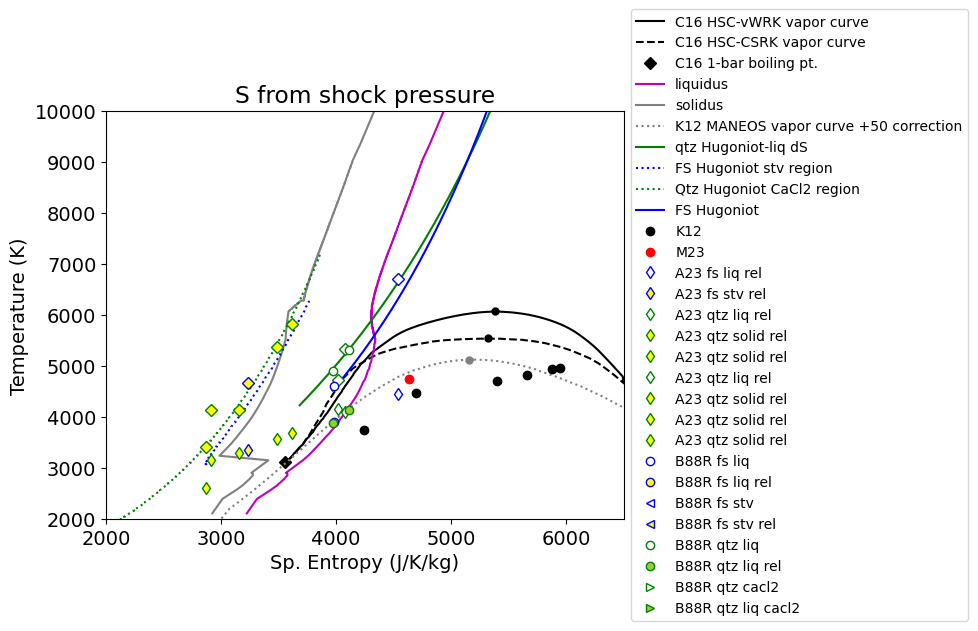
# define constants
Rgas = 8.314 # J/K/mol
sio2mol = 28.085+2*15.999 # g per formula unit
print(3*Rgas/(sio2mol/1000)*np.log(2))
287.74323814600064
print(np.log(2))
0.6931471805599453
print(sio2mol,Rgas)
60.083 8.314
print(3*.221*Rgas/sio2mol*1000)
91.74278914168734